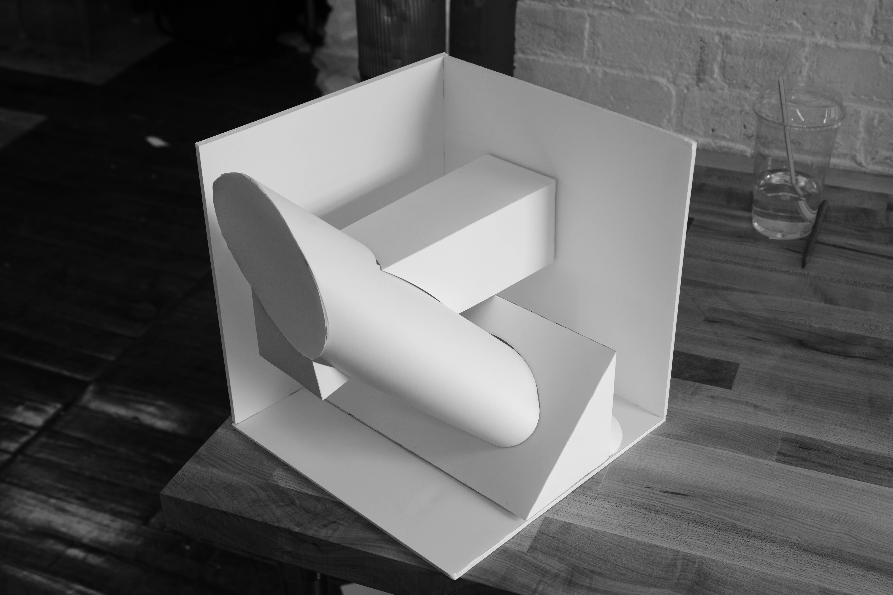
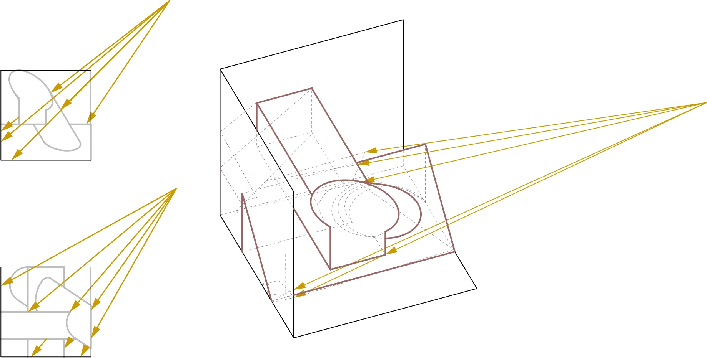
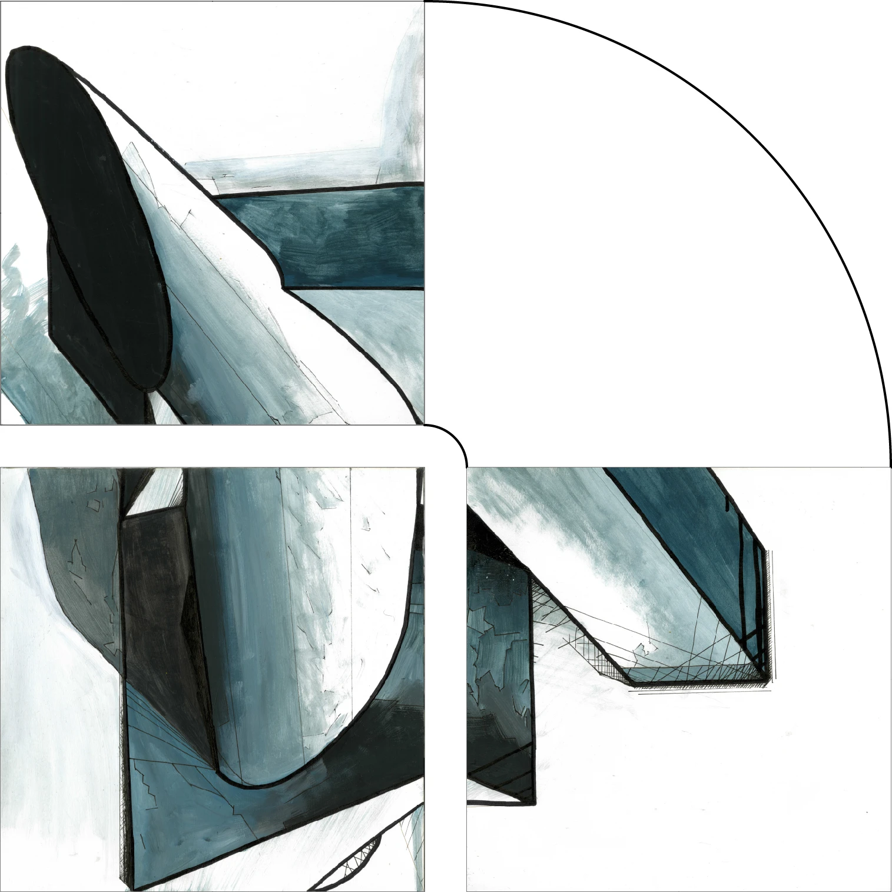
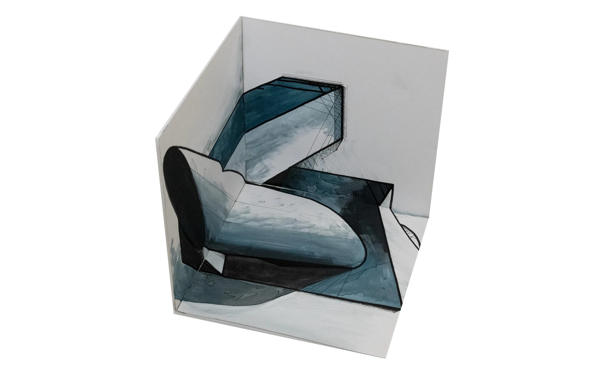

audio
textiles
architecture
visual
research
internal
urban metabolism
states of exception
spaces for mediation
projection
urban ecologies
thesis research
sticky research
Architectural Projection | RISD Architecture Fall 2021
Projection and Perspective



